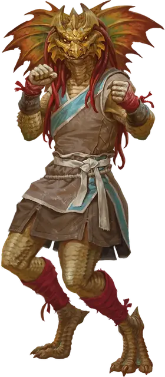

Чутьё Совершенного ордена
Transcendent Order Instinct
Маленький или Средний Гуманоид

Класс Доспеха 16 (защита без доспехов)
Хиты 49 (9к8 + 9)
Скорость 40 футов
| мод | спас | ||
|---|---|---|---|
| СИЛ | 10 | +0 | +0 |
| ЛОВ | 16 | +3 | +3 |
| ТЕЛ | 12 | +1 | +1 |
| мод | спас | ||
|---|---|---|---|
| ИНТ | 10 | +0 | +0 |
| МДР | 16 | +3 | +5 |
| ХАР | 12 | +1 | +3 |
Навыки Акробатика +5, Восприятие +5, Выступление +3
Чувства пассивное Восприятие 15
Языки Общий плюс один язык
Опасность 3 (700 опыта)
Бонус мастерства +2
Особенности
Защита без доспехов. Пока чутьё не носит ни доспехи, ни щит, к КД прибавляется его модификатор Мудрости.
Действия
Мультиатака. Чутьё совершает три Безоружных удара.
Безоружный удар. . Рукопашная атака оружием: +5 к попаданию, досягаемость 5 футов, одна цель. Попадание: 7 (1к8 + 3) дробящего урона.
Реакции
Чутьё может совершать до трёх реакций в раунд, но только одну в ход.
Отражение снарядов. В ответ на попадание по нему атакой дальнобойным оружием, чутьё отражает снаряд. Урон от этой атаки уменьшается на 1к6.
Описание
Элитные мастера боевых искусств, чутьё, научились сражаться, не обременяя себя мыслью, быстро отражая удары своих врагов.